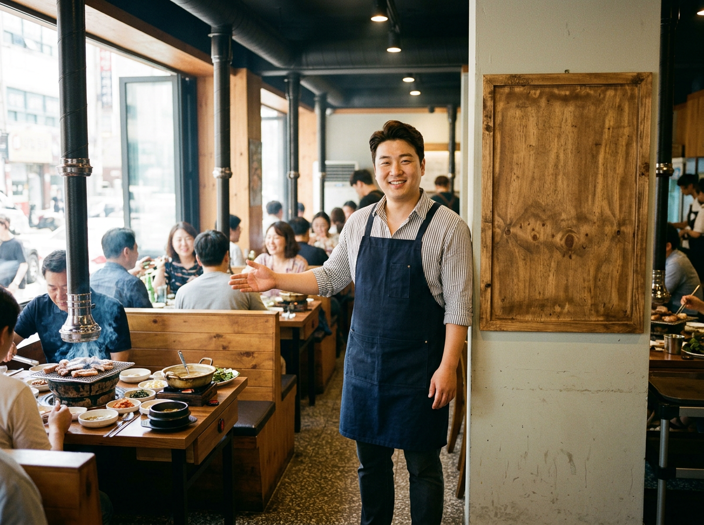
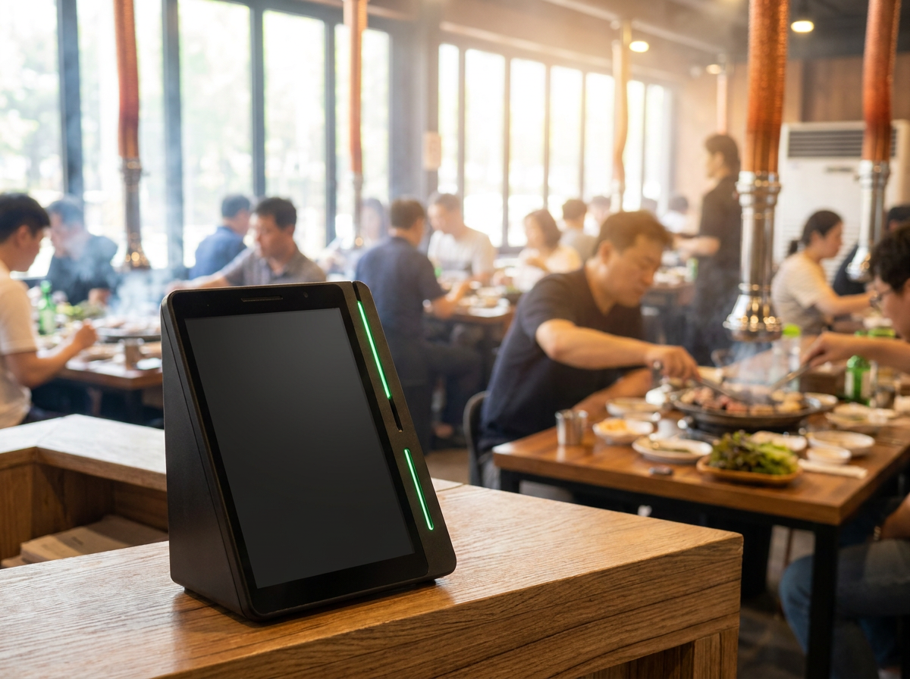
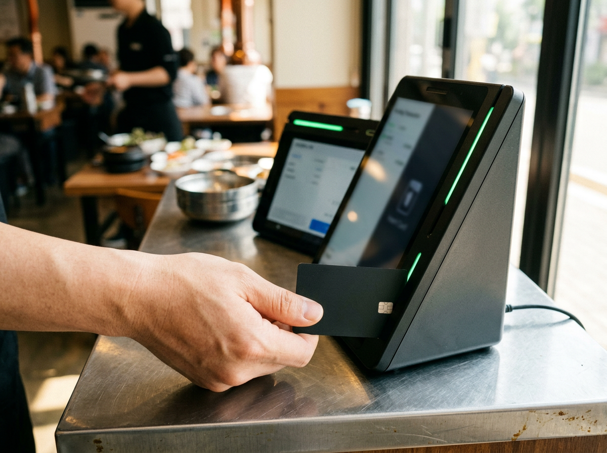

음식점 원산지 표시, 어디에 어떻게 적어야 하나 (바뀐 걸 안 고쳐서 틀립니다)
원산지 표시에서 사장님들이 지적을 받는 사례를 보면, 되풀이되는 유형이 하나 있습니다. 몰라서 틀린 게 아니라, 재료가 바뀐 뒤에 표시를 안 고쳐서 틀립니다. 처음 문을 열 때는 다들 꼼꼼하게 적어 붙입니다. 문제는 그다음입니다. 고기 납품처를 바꾸고, 메뉴를 하나 추가하고, 반찬 재료를 다른 곳에서 받기 시작해도 벽에 걸린 안내판은 개업 첫날 그대로인 경우가 많습니다. 누리네트웍스는 수도권 매장을 직접 방문해 설치하고 관리하는 포스·결제단말 전문 업체입니다. 매장을 다니다 보면 주방은 바뀌었는데 안내판만 멈춰 있는 가게를 자주 봅니다. 이 글에서는 원산지 표시를 어디에 어떻게 적는지, 그리고 바뀔 때마다 함께 고쳐야 할 것들이 무엇인지 정리했습니다.

원산지 표시는 "무엇을, 어디에" 적는 문제입니다
원산지 표시는 농수산물의 원산지 표시 등에 관한 법률에 따라 운영되는 제도입니다. 음식점에서는 쓰이는 모든 재료가 아니라, 법령에서 정한 표시 대상 품목(육류·쌀·배추김치·일부 수산물 등)이 어디에서 왔는지를 알려야 합니다. 대상 품목과 표시 단위는 개정될 수 있으니 공식기관에서 확인하시는 편이 정확합니다. 손님이 무엇을 먹는지 알고 고를 수 있게 하자는 취지이고, 그래서 기준도 "손님이 알아볼 수 있는가"를 중심으로 짜여 있습니다.
여기서 반드시 짚어 둘 것이 있습니다. 표시 대상이 되는 품목의 범위, 표시 방법의 세부 기준, 위반했을 때의 처분 기준은 개정될 수 있습니다. 이 글은 일반적인 원칙만 정리한 것이니, 실제로 우리 가게에 적용할 때는 농림축산식품부·해양수산부와 국립농산물품질관리원(수산물은 국립수산물품질관리원) 등 공식기관에서 최신 기준을 확인하신 뒤 적용하시길 권합니다. 특히 취급 품목이 많은 고깃집이라면 한 번쯤 관할 기관에 직접 문의해 두시는 편이 마음이 편합니다.
기본 원칙은 단순합니다. 첫째, 손님이 주문 전에 볼 수 있어야 합니다. 계산할 때 비로소 알게 되는 위치라면 의미가 없습니다. 둘째, 읽을 수 있어야 합니다. 글자 크기에는 메뉴판의 음식명과 비교하는 별도 기준이 정해져 있으니, 붙이기 전에 관할 기관 안내에서 현재 기준을 확인해 보십시오. 셋째, 메뉴 이름과 재료가 서로 연결되어야 합니다. "소고기 - 국내산"처럼 뭉뚱그린 표시보다는, 어떤 메뉴에 들어가는 어떤 재료인지 알 수 있게 적는 편이 안전합니다.
손님이 볼 수 있는 곳에, 그리고 온라인에도
매장 안에서 흔히 쓰는 방식은 두 가지입니다. 벽면 게시판에 한꺼번에 정리해 붙이는 방식, 그리고 메뉴판에 메뉴별로 함께 적는 방식입니다. 어느 쪽이든 손님이 앉은 자리에서 확인할 수 있어야 합니다. 홀이 넓은 고깃집이라면 게시판 하나만 입구 옆에 걸어 두는 것으로는 부족할 수 있습니다. 안쪽 자리 손님은 그 판을 볼 일이 없기 때문입니다.
요즘 더 자주 놓치는 곳은 매장 밖입니다. 배달앱 메뉴 화면, 포장 주문 페이지, 온라인에 올린 메뉴 이미지처럼 손님이 가게에 들어오기 전에 보는 화면에도 같은 정보가 필요합니다. 홀 안내판은 새로 고쳐 붙였는데 배달앱 설명란은 몇 달 전 내용 그대로인 경우가 적지 않습니다.
| 표시가 필요한 자리 | 자주 생기는 문제 |
|---|---|
| 벽면 게시판 | 홀 안쪽 자리에서는 보이지 않음 |
| 메뉴판·메뉴북 | 메뉴는 추가됐는데 재료 표시는 그대로 |
| 배달앱 메뉴 화면 | 매장 안내판만 고치고 앱은 방치 |
| 포장·테이크아웃 안내 | 매장용과 내용이 서로 다름 |
| 온라인 매장 정보 | 예전 메뉴 사진과 설명이 계속 노출 |
표를 보시면 문제의 성격이 보입니다. 표시 자체를 몰라서 생기는 문제는 거의 없습니다. 표시해야 할 자리가 여러 군데인데, 바뀔 때 한 군데만 고치기 때문에 생기는 문제입니다.

근거 서류를 남기는 습관이 결국 사장님을 지켜 줍니다
원산지 표시에서 또 하나 중요한 것이 증빙입니다. 안내판에 적어 둔 내용이 사실이라는 것을 보여 줄 수 있어야 합니다. 그 근거가 되는 것이 납품 거래명세서, 세금계산서, 영수증, 포장재의 표시 같은 서류입니다.
거창하게 관리할 필요는 없습니다. 육류 납품 거래명세서는 한 파일에 날짜순으로 모아 두고, 채소나 양념처럼 여러 곳에서 받는 재료는 영수증을 월별 봉투에 넣어 두는 정도로도 충분히 도움이 됩니다. 중요한 것은 "언제부터 어디 물건을 썼는지"를 나중에 되짚을 수 있느냐입니다. 나중에 확인 요청을 받았을 때, 서류가 있으면 설명이 끝나고 없으면 설명이 길어집니다.
실제로 문제가 생기는 순간은 대부분 이렇습니다. 단골 납품처 사정으로 두 달간 다른 곳에서 고기를 받게 됩니다. 주방은 바로 적응합니다. 그런데 벽에 걸린 안내판을 고치는 일은 "이번 주에 하자"로 미뤄집니다. 두 달이 지나 원래 거래처로 돌아오면 고칠 이유도 사라집니다. 그사이 안내판은 실제와 다른 내용을 걸고 있었던 셈입니다. 악의가 없더라도 표시와 실제가 달랐던 상황 자체는 남습니다.
그래서 저희가 사장님들께 권해 드리는 방법은 하나입니다. 재료가 바뀌는 날, 그날 바로 세 군데를 같이 고친다. 벽면 게시판, 메뉴판, 그리고 배달앱과 온라인 매장 정보입니다. 메뉴가 바뀌면 원산지 표시도, 매장 안내도, 검색으로 들어오는 손님이 보는 정보도 함께 바뀌어야 합니다.
여기서 매장 정보와 결제가 따로 놀면 이 일이 더 번거로워집니다. 네이버단말기는 네이버 플레이스·예약과 연결해 쓸 수 있어, 검색으로 찾아온 손님이 방문하고 결제까지 하는 흐름을 하나로 이어 둘 수 있습니다. 연동 범위는 업종·가입 조건에 따라 다를 수 있어 상담 시 안내해 드립니다. 메뉴를 손볼 때 매장 정보 쪽을 같이 확인하게 되니, 안내판만 고치고 온라인은 잊는 일이 줄어듭니다. 네이버페이로 결제하고 적립하는 손님을 그대로 받을 수 있다는 점도 검색 유입이 많은 고깃집에는 도움이 됩니다. 누리네트웍스는 정품 신제품 보증과 수도권 직영 설치·관리를 원칙으로 하며, 구성과 비용은 매장 상황에 따라 달라지므로 상담 시 안내해 드립니다.

자주 묻는 질문(FAQ)
Q. 원산지 표시는 게시판과 메뉴판 중 하나만 하면 되나요?
어느 한쪽만으로 충분한지는 매장 구조와 운영 방식에 따라 다릅니다. 홀이 넓거나 자리가 나뉘어 있으면 게시판 하나로는 안쪽 손님이 확인하기 어려울 수 있어, 메뉴판에 함께 적는 편이 안전합니다. 다만 표시 대상 품목과 표시 방법, 위반 시 처분 기준은 개정될 수 있으니 농림축산식품부·해양수산부와 국립농산물품질관리원(수산물은 국립수산물품질관리원) 등 공식기관에서 최신 기준을 확인하신 뒤 적용하시길 권합니다.
Q. 배달앱에도 원산지를 적어야 하나요?
손님이 주문 전에 보는 화면이라면 매장 안내판과 같은 기준으로 생각하시는 편이 좋습니다. 매장 표시만 고치고 배달앱을 그대로 두면 두 정보가 서로 달라져 문제가 되기 쉽습니다. 재료가 바뀌면 앱 메뉴 설명도 같은 날 함께 고치시길 권합니다.
Q. 거래명세서는 얼마나 오래 보관해야 하나요?
보관 기간은 관련 기준에 따라 달라질 수 있어 단정해서 말씀드리기 어렵습니다. 다만 실무적으로는 날짜순으로 모아 두고, 납품처가 바뀐 시점을 알 수 있게 정리해 두시면 확인 요청을 받았을 때 설명이 훨씬 수월합니다.
Q. 납품처가 자주 바뀌는데 그때마다 안내판을 새로 만들어야 하나요?
전체를 새로 제작하지 않아도 되도록, 자주 바뀌는 항목은 교체할 수 있는 형태로 만들어 두는 방법이 있습니다. 중요한 것은 형태가 아니라 바뀐 날 바로 반영하는 습관입니다.
메뉴가 바뀌면, 손님이 보는 정보도 같이 바뀌어야 합니다
원산지 표시는 한 번 붙여 놓고 끝나는 일이 아니라, 가게가 움직일 때마다 함께 움직여야 하는 정보입니다. 재료가 바뀌는 날 벽면 게시판과 메뉴판, 그리고 검색으로 들어오는 손님이 보는 온라인 정보까지 같이 손보는 습관만 들이시면 대부분의 문제는 생기지 않습니다. 매장 정보와 결제를 어떻게 이어 두면 좋을지, 지금 쓰시는 방식에서 무엇을 정리하면 좋을지 말씀해 주시면 매장에 맞는 구성을 함께 찾아 드리겠습니다. 수도권은 직접 방문해 설치하고 관리해 드리니 부담 없이 문의 주세요.
- 📞 전화상담 1544-7754
- 🌐 홈페이지 https://nwpos.co.kr

📷 인스타그램 팔로우 https://www.instagram.com/nurinetworkspos

▶️ 유튜브 구독 https://www.youtube.com/@nurinetworks